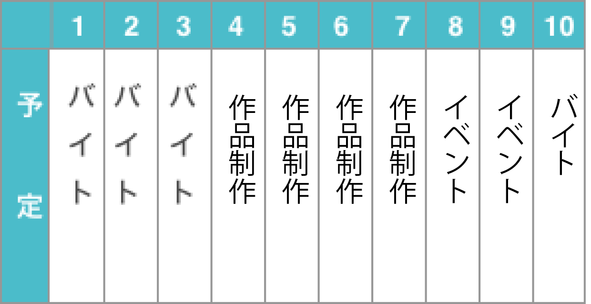
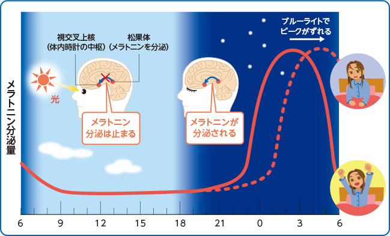

おふらいん生活 はじまる
さて、１０日間のスケジュールはこちら！

まずはオフライン環境でのゲームについて
オフライン環境で一番懸念していたのは、ゲームのイベントが走れないこと。ほどんどのアプリゲームは基本無料のアイテム課金制なので、その分イベント周回するのに時間がかかるのさ〜 いつも自由に時間を過ごせるのは夜なので、２、３時間延々と複数タイトルのクエストを周回しているのだけど今回はそれができないのでどうなることやら……。
もちろんイベント開催中以外のゲームもプレイしたい……。しかしオフラインだとできな………
できた━━━(ﾟ∀ﾟ)━━━！！！！

上記のゲームは台湾産リズムゲームの『DEEMO』と『Lanota』なのですが、この２タイトルは一部の機能は利用できないものの、オフラインでも遊べるようになっていました。飛行機などオンライン環境ではない場所にいる時にでもプレイヤーに負担がかからずにサービスが提供、インターネットにアクセスしない分、動作が速いのさ〜
スマホゲームの場合、オフライン対応しているのは海外産のものが多かったのさ〜
ただ、アプリの場合にオフラインで設計されているものはストレージに保存されるデータ量が多くなるのではないかと思うのさ〜
予定の半分ほどがバイトだったのでインターネットの使用時間が長い17時から21時の時間帯でも比較的オフライン環境でも過ごしやすかったのです。
睡眠時間といえば
また、寝る前のスマホを使わないようにした方がいいって聞いたことがあるのでインターネッツで調べてみたのさ〜
武田薬報webによると、ブルーライトっていうのは波長が380～500nm（ナノメートル）の人の目で見ることのできる光の中で最も波長が短く、強いエネルギーを持っており、角膜や水晶体で吸収されずにどーんと網膜まで届いてしまうらしいのです((((；ﾟДﾟ))))ｶﾞｸｶﾞｸﾌﾞﾙﾌﾞﾙ


個人差はあるけれど、デスクワークだと肩が凝るとか目が疲れたりするけどこれはブルーライトの光を見ると疲れやすくなるそうなのさ〜

武田薬報webより https://takeda-kenko.jp/yakuhou/feature/bluelight/vol01.html